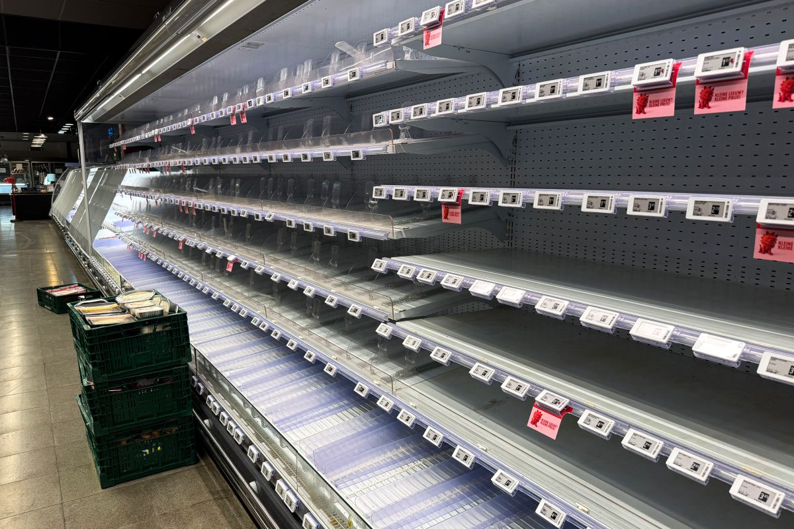

厨房智能硬件 / 联网设备可靠性
欧洲冷柜遭远程干扰，厨房联网也要守住温控底线
新一轮事件引发多国应对。远程运维便利之外，控制权限与更新维护同样影响食物储存。

Euronews当地时间11月3日晚报道，意大利当天就欧洲多地超市冷柜遭网络攻击召开应对会议。部分门店因设备温度升高而丢弃食品。本轮事件11月2日已被报道，攻击者身份和动机尚未确定，也没有证据可以将其归因于AI。
法国CERT-FR此前的冷柜控制器通告提醒，管理接口直接暴露公网不符合安全实践，建议通过受保护网络接入、更新固件并更改默认口令。该通告10月发布，作为技术背景引用；商用冷链事件不能直接推断某款家用冰箱存在同样问题。
Euronews · 欧洲冷柜事件最新进展 · 11月3日21:22 GMT+1，即北京时间11月4日04:22法国CERT-FR · 冷柜控制器安全通告 · 10月12日发布；10月16日更新最新报道：北京时间11月4日04:22；会议：11月3日；本轮事件此前已发生。安全通告为10月背景资料。